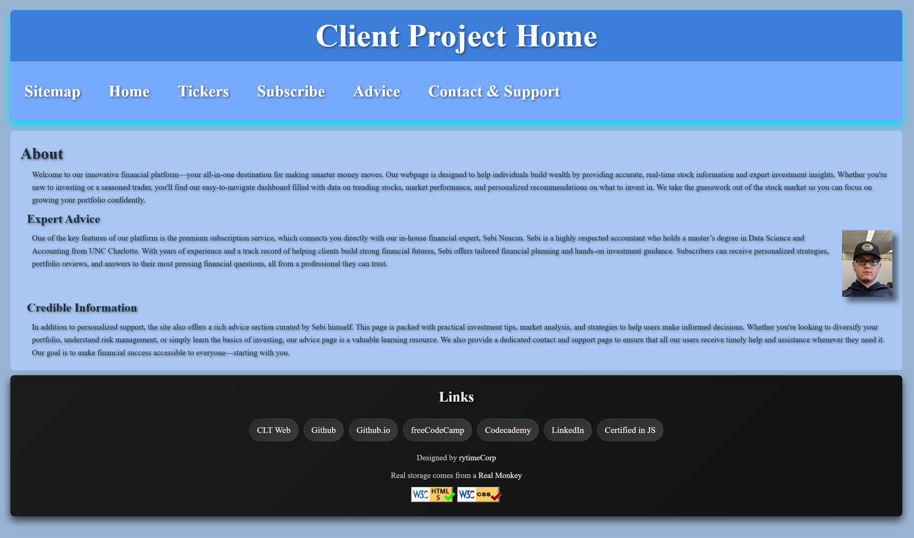

Peer Review 2
Martin, Chase

- Files & Links:
- All required project files are included and accessible.
- Navigation and links function correctly.
- Page Design:
- Creative and consistent design choices.
- Color palette is readable and matches theme.
- Page Elements:
- Includes semantic structure (header, nav, main, footer).
- Good image use and responsive layout.
- Assignment Requirements:
- Client project meets assignment expectations.
- Header/footer includes implemented.
- Additional Notes:
- Minor padding improvements could help layout spacing.
- Great attention to typography and detail!